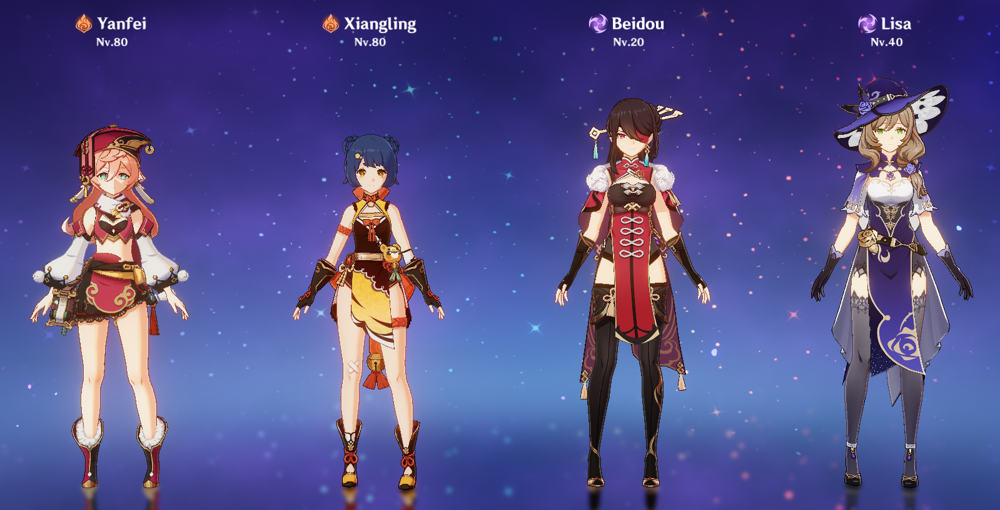
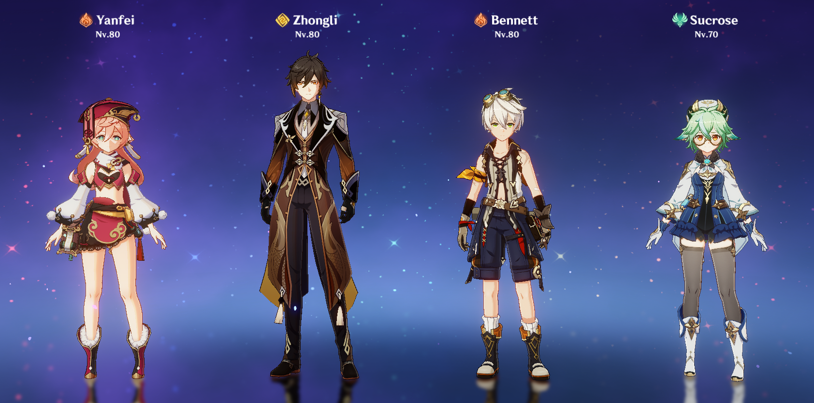
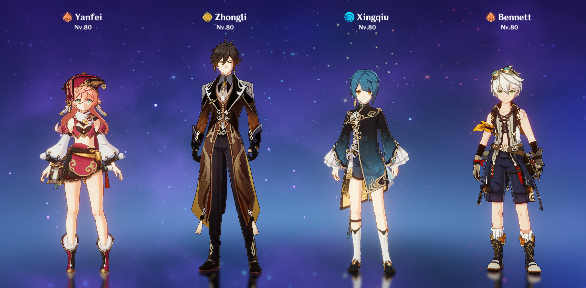

Composições para Yanfei DPS
Yanfei é uma carregadora DPS glasscannon ou seja, causa muito dano sendo muito frágil. Assim, uma composição com ela deve escolher entre buscar ainda mais dano bruto ou optar por suportes mais defensivos.
Composição Yanfei Overload

Esse time consiste em Yanfei + suporte pyro de dano + Beidou + bateria (preferencialmente electro).
Nesse time, Yanfei irá ter menos proteção, contando apenas com sua C4 e com o escudo da explosão de Beidou. Em troca dessa defesa, esse time possui dano massivo por meio das reações de Sobrecarga, que causam dano e afastam os inimigos.
Uma dupla que fortifica muito esse time é Bennet + Jean, que combam os bursts para criar uma aréa de reação de Redemoinho pyro, que deixa as reações ainda mais poderosas.
O conjunto de artefato recomendado é o set Reminiscência Nostalgica, já que Yanfei terá uma bateria - evitando o problema com a energia.
Composição Yanfei Mono Pyro

Esse time consiste em Yanfei + Zhongli ou Thoma + suporte pyro + personagem anemo.
Nesse time, Yanfei irá ter mais proteção, contando com sua C4 e o poderoso escudo de jade de Zhongli. A estratégia desse time é reduzir as defesas por meio da reação de Redemoinho pyro, usando um personagem anemo, como Kazuha ou Sucrose.
Uma maneira de deixar esse time mais F2P é usar o Thoma, que também tem um escudo em seu kit.
O conjunto de artefato recomendado é o set Trupe Itinerante, já que Yanfei será a fonte de todo o dano da equipe.
Composição Yanfei Vaporizar

Esse time consiste em Yanfei + Zhongli ou Diona + Xingqiu, Mona ou Kokomi + suporte pyro.
Nesse time, Yanfei irá ter mais proteção, contando com sua C4 e o poderoso escudo de jade de Zhongli. Além disso, esse time oferece um ótimo suporte para Yanfei, com escudos e amplificações de dano. Com um aplicador Hydro, Yanfei terá acesso às poderosas reações de vaporização, que causam muito dano.
O conjunto de artefato recomendado é o set Bruxa das Chamas Carmesim, visto que você terá acesso as reações de Vaporização, e caso tenha a Diona C6, essas reações ficarão ainda mais poderosas!